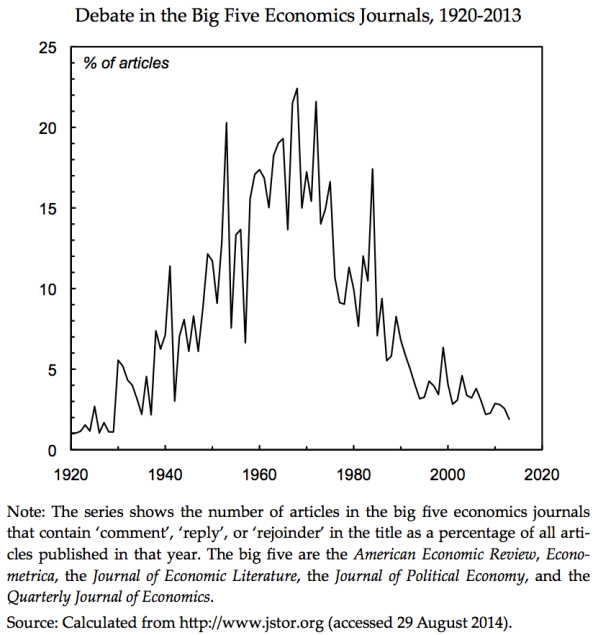

过去十天里，每次用中时的网站工具写稿，一阵子之后，电脑就当机，大约有十几个小时的稿子就这様消失到黑洞里去。我现在学乖了，先建立一个Microsoft Word的檔案，再一次拷贝过去。我本来不这么做是因为网站联接和图片必须用中时的特殊手段才能输入，所以在剪贴的过程中还要再做一次集成。但是中时的网站工具没有暂时保存文章的功能，两害相权取其轻，还是得另外建檔。
今天先简单谈谈一篇有趣的经济学论文统计结果。原文在这里：http://dissidentvoice.org/2014/12/the-rise-and-fall-of-debate-in-economics/。文章的主要内容是这张图：
横轴是年分，纵轴是美国五大经济学学术期刊里的论文标题有“Comment”（“评论”），“Reply”（“回答”）或“Rejoinder”（“回覆”）等字眼的百分比。这様的标题在经济学界代表着那篇论文是一系列辩论中的一部分。辩论在不能靠实験决定真偽的社会学科里十分重要，例如我最喜欢的社会学期刊《Foreign Affairs》（《外交事务》）就甘脆分为三大部分：本期专题，散文（Essays）和辩论（Reviews & Responses），其中辩论占最近一期（2014年十一月/十二月号）21篇文章中的6篇，亦即29%。
原本美国的政经大权都由资本家掌控，所以美国经济学界也是主张laissez faire（自由放任，无所作为，随他乱搞）的一言堂。在1929年股市大恐慌引发经济大萧条之后，有识之士开始鼓吹政府制定金融规则和引导经济发展的重要性，上图中的那条曲线也就从1%急剧地上跳到5%。其后随着凯因斯（Keynes，英国经济学家。他强调自由市场制度内含的不稳定性，主张凭藉政治力量来维持平衡和避免极端。参见前文《美元的金融霸权》）理论的建立和传播，辩论的百分比逐步上升，在1960年代和1970年代前半达到了还算健康的20%左右的水准。
1960年代是美国国力的巅峰，社会财富的分配也达到歷史性的公平均匀程度。于是在1970年代初期，美国的亿万富豪们开始了全面的大反攻。首先是买通国会，修法使收买议员成为公开而且合法的行为，从此建立了庞大的游说工业（Lobby Industry）。其次是参照烟草公司数十年来制造假科学论文以“证明”吸烟无害健康的成功先例（参见http://tobacco.stanford.edu/tobacco_main/images.php?token2=fm_st067.php&token1=fm_img1550.php&theme_file=fm_mt004.php&theme_name=Scientific%20Authority&subtheme_name=Pseudoscience），建立了好几个智库，专门负责扭曲事实，假造证据，以便在推行谋求私利的新法案时，能有学术上或半学术上的理论根据。例如很有名的传统基金会（The Heritage Foundation）就是在1973年，靠着啤酒、石油和金融大亨的捐款而创立的。另一个大名鼎鼎的美国企业研究所（American Enterprise Institute，AEI）虽然是1938年就成立了，但是一直默默无闻，无足轻重；直到1972年忽然收到大笔捐款，从此招兵买马，连福特总统在1977年卸任之后，都和他的幕僚一起搬家到AEI。这些銭包饱满的专业宣传机构，不但很快地帮雷根选上了总统，在经济、外交和军事上，也从此一直非常成功地使美国的政策只为大公司的利润服务。
在经济学界，要直接收买教授当然比建立基金会还更便宜，不过哈佛或史丹佛的教授们自视太高，所以就从中西部下手，尤其是芝加哥大学的经济系，由于有鼓吹絶对自由主义的Milton Friedman在，早在1950和1960年代就是中情局送拉丁美洲学生接受对美国资本完全开放的洗脑教育的重点站，在1970年代初期也将忽悠的炮口转向对内，成为美国国内新一代自由放任主义的掌旗手（Standard Bearer）。后来在20世纪末期，美国的经济学界基本上分为两支：即所谓的 “咸水经济学”（“Salt Water Economics”）和“淡水经济学”（“Fresh Water Economics”）。前者指东西两岸诸大学，其对自由放任主义的主张还稍受理性的节制；后者指中西部不临海的大学，其对自由放任主义的信仰则已到达完全狂热的地步。对他们来说，政府做什么都是有害的（即雷根的名言：“Government is not the solution to our problems; government is the problem.”），连修公路、执法和作战都应该留给私人来做。
所以在上图中，那条曲线从1975年开始下降。雷根上任之后採行Voodoo Economics（巫妖经济学），几个讲究理性思考的经济学教授在1980年代试图抵抗，留下了一个小尖峰，但是美国的整个社会和政体都在快速腐化，他们当然挡不住经济学界跟着腐化的过程。到2014年，辩论的百分比已经掉到低于3%。对我来说，最可怕的是在2008年美国金融经济崩盘，而那条曲线居然只在3%的水平震荡了一下：也就是说美国经济学界的腐化已经到了无可回天的地步，咸水经济学已经被淡水经济学彻底征服，不再有自我反省的能力，更别提改革或创新了。
三十年前，哈佛的经济系研究生，只有不到20%认为经济学是科学；到今年，絶大多数填了Yes。这并不代表美国经济学有什么进步；刚好相反，是因为他们被成功洗脑，以致连什么是科学都不知道了。淡水经济学征服美国经济学界，和超弦征服美国物理学界的过程很类似（哈佛物理系也曾抵抗超弦15年左右，不过最后还是被攻陷了。唯一成功反抗到现在的一流学校，只有柏克莱）。不过在后果上，几万个超弦教授顶多浪费几十亿美元的薪水，巫妖经济学却已经摧毁了欧美几十万亿美元的经济生產力。迷思害人，莫此为甚。
发表日期 : 2014-12-15 00:43
滴答 留言 :
王孟源 回复:
学而时习之 留言 :
王孟源 回复:
lbboy 留言 :
王孟源 回复: